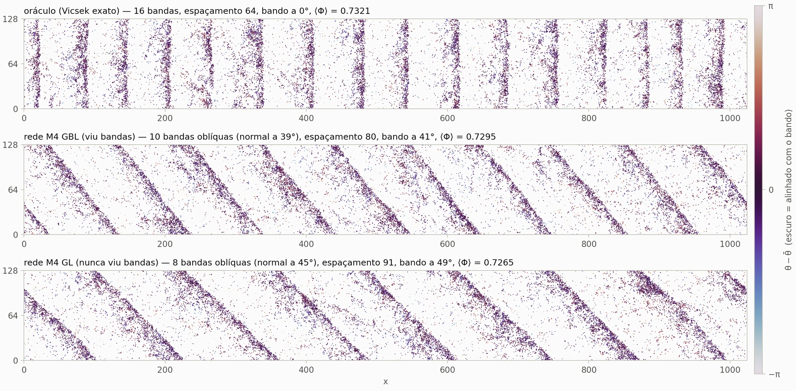
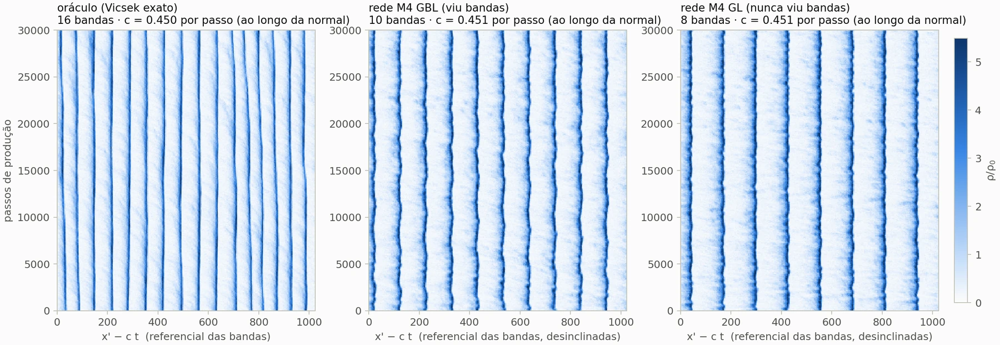
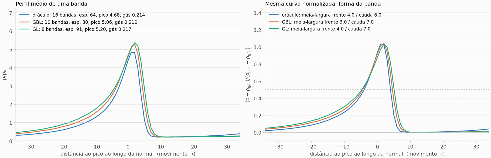
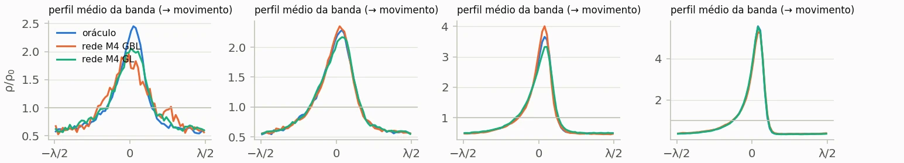

Avaliação além da métrica offline
A rede com erro abaixo de 1° só foi aceita depois de rodar sozinha e ser comparada no nível do sistema. É o mesmo cuidado de testar uma política de negócio antes de colocá-la em produção.
Ciência de dados · física computacional
Treinei redes neurais em grafo para imitar, um passo de cada vez, as partículas do modelo de Vicsek. Depois tirei a regra verdadeira e deixei a rede conduzir o sistema sozinha. Ela reproduziu a ordem, as flutuações e as bandas que atravessam o sistema, inclusive quando foi treinada sem nunca ter visto uma banda.
Leo Santos Lopes · doutorado em física computacional (UFMG) · resultados até 30/09/2026
O modelo de Vicsek rodando no seu navegador. Cada traço é uma partícula que, a cada passo, segue a direção média das vizinhas a menos de uma distância R = 1, com um pouco de ruído. Perto da transição, a ordem se organiza em bandas densas que atravessam a caixa. Φ mede o alinhamento (0 = direções ao acaso, 1 = todas iguais). Esta é a regra verdadeira; a rede neural precisa aprendê-la só olhando exemplos.
A pergunta
Um modelo pode prever muito bem o próximo passo de cada partícula e, mesmo assim, produzir um comportamento coletivo errado quando roda sozinho. Os erros pequenos se acumulam e podem ser amplificados, principalmente perto de uma transição de fase.
Por isso o projeto avalia a rede duas vezes. Primeiro, na previsão de um passo, contra a distribuição exata do ruído. Depois, em malha fechada: a rede substitui a regra verdadeira e o sistema inteiro é comparado com o modelo exato, rodando no mesmo código e nas mesmas condições.
Fora da física, é a mesma distância que existe entre a métrica offline de um modelo e o efeito dele quando entra em produção.
Modelo de Vicsek em C, validado contra uma versão em Python. 1.326 simulações num cluster com SLURM.
Cada partícula vira um grafo com as vizinhas até d = 2, no referencial dela. Treino, validação e teste separados por semente.
A rede prevê a distribuição inteira do próximo ângulo, não só um valor. A perda é comparada com a da distribuição exata.
Um simulador em PyTorch, na GPU, troca a regra pela rede. O modelo exato roda no mesmo código como controle.
Parâmetro de ordem, flutuações, cumulante de Binder e bandas: rede e modelo exato lado a lado.
Resultado 1 · Um passo
Testei cinco arquiteturas, da mais simples à mais flexível, em 40.960 partículas de teste por estado (gás, bandas e líquido) e por tipo de ruído. O modelo que ignora as vizinhas erra a direção por 14° a 35°. Uma rede densa que vê as 8 vizinhas mais próximas cai para 5° a 8°. As redes em grafo, que veem todas as vizinhas, chegam a 1° a 2° com uma média simples (M3) e a 0,5° a 1° quando aprendem um peso para cada distância (M4).
O M4 é o mais preciso e é o que uso nos testes seguintes.
A métrica principal é a log-verossimilhança negativa (NLL) do próximo ângulo, comparada com a do modelo exato. A saída da rede é uma direção mais um histograma simétrico de 100 bins para o ruído. Esse formato tem um piso: mesmo com a direção exata, ele perde 0,008 nat no ruído angular e 0,18 a 0,20 nat no vetorial, onde a densidade exata diverge nas bordas do suporte. A tabela do gráfico mostra quanto cada modelo fica acima desse piso.
Os dados são inteiros na GPU (grafos em CSR e agregação com index_add, sem PyTorch Geometric). A época é escolhida só pelos estados de treino.
Resultado 2 · O que a rede aprendeu
No modelo de Vicsek, uma partícula só enxerga vizinhas a menos de uma distância R = 1. A rede recebia vizinhas até d = 2 e podia dar a cada distância o peso que quisesse. Ela aprendeu um degrau: peso constante até perto de 1 e zero depois.
O peso cai de 90% para 10% entre d = 0,97 e 1,02, nos dois tipos de ruído e também na rede treinada sem bandas. A rede aprendeu a regra, não uma correlação qualquer dos dados.
No M4, a mensagem de cada vizinha é ponderada por w(d) = softplus(MLP(d)) e a agregação é uma média ponderada normalizada. As curvas foram calculadas direto dos pesos treinados e normalizadas pela média entre d = 0,3 e 0,9.
O w(d) sozinho não é o peso efetivo completo, porque a mensagem também depende de d, e a própria partícula fica com peso um pouco maior (w(0) ≈ 1,07 a 1,13). O corte em d = 1 não deixa ambiguidade. A rede com atenção (M5) chegou ao mesmo corte.
Resultado 3 · Malha fechada
Troquei a regra do Vicsek pela rede e rodei 30 mil passos numa caixa 64 × 64, em cinco densidades por tipo de ruído, do gás ao líquido. O modelo exato rodou no mesmo código e com a mesma semente, como controle.
Em 9 das 10 condições, a diferença no parâmetro de ordem fica dentro de 2 desvios-padrão. Nas fases ordenadas (ρ = 2 e 4), a diferença vai de 0,01% a 0,3%.
O único desvio claro é no ruído vetorial com ρ = 1: +1,1% (3,9σ). Na caixa grande, na mesma densidade, a diferença cai para −0,4%. É o ponto que vou investigar com mais sementes.
z = (Φ da rede − Φ do modelo exato) / σ combinado, com o erro de cada média calculado dentro da própria série (uma semente por ponto). O cumulante de Binder ficou no patamar certo em todas as condições: ~1/3 no gás e 2/3 nas fases ordenadas.
No ruído angular com ρ = 1 a diferença é de +17%, mas só 1,5σ: é o ponto mais sensível da tabela (flutuações χ ≈ 25, perto da borda entre gás e bandas), e o erro dentro da série provavelmente está subestimado. Nas densidades altas, a rede é até 10 vezes mais lenta que o modelo exato no mesmo código.
Resultado 4 · Bandas
Bandas são a assinatura do modelo de Vicsek: faixas densas e ordenadas que atravessam um gás desordenado. Para vê-las de verdade, rodei uma caixa de 1024 × 128 com 131.072 partículas por 130 mil passos (ruído vetorial, ρ = 1).
A velocidade das bandas bate em 0,2%: 0,451 por passo nas redes, 0,450 no modelo exato. A densidade do gás entre as bandas e a forma de cada banda também batem. O que muda é o padrão: o modelo exato ficou com 16 bandas perpendiculares ao movimento, e as redes giraram o bando e formaram 8 a 10 bandas oblíquas. Numa caixa periódica os dois padrões são possíveis. Saber se isso é sorte do transiente ou algo sistemático é o próximo teste.

Densidades divididas pela média ρ₀. Velocidade medida ao longo da normal da banda. Uma semente por fonte.


Resultado 5 · Fora da distribuição
Treinei o mesmo M4 só com gás e líquido, sem nenhum exemplo de banda, e a melhor época foi escolhida só por esses dois estados. Depois rodei essa rede perto da transição, em densidades que não estavam no treino de nenhuma rede.
Ela forma bandas no mesmo limiar do modelo exato, com o mesmo perfil e a mesma velocidade (diferença de até 0,3% em ρ = 0,5). Na caixa grande, forma 8 bandas estáveis que andam a 0,451 por passo.
É um teste de generalização: uma política aprendida num regime e avaliada em outro que ela nunca viu.
Caixa 64 × 64, ruído vetorial com η = 0,55, início aleatório, 5 mil passos de transiente e 35 mil de medida. "Banda" é um modo de Fourier da densidade com amplitude acima de 0,25 e normal alinhada ao movimento.
Em ρ = 0,4 a rede sem bandas fica um pouco abaixo (banda em 81% do tempo contra 90%, velocidade −2%, cerca de 2σ). Com uma semente por ponto, pode ser flutuação; as sementes 2 e 3 vão decidir. No teste de um passo, essa rede perde só 0,004 a 0,005 nat em relação à que viu bandas, inclusive no estado de bandas.

Limitações e próximos passos
Para além da física
A rede com erro abaixo de 1° só foi aceita depois de rodar sozinha e ser comparada no nível do sistema. É o mesmo cuidado de testar uma política de negócio antes de colocá-la em produção.
Toda comparação é contra um controle rodado no mesmo código e nas mesmas condições, com incerteza e escore z. Resultado sem controle não entra.
Treino, validação e teste separados por semente de simulação. Nenhuma trajetória aparece em dois conjuntos, e a época é escolhida sem olhar o teste.
Uma rede treinada sem um regime foi avaliada nesse regime. É o equivalente a testar um modelo num segmento que ele nunca viu antes de confiar nele.
Campanha de 1.326 simulações com SLURM, gigabytes de dados, treino numa GPU de 4 GB e um simulador próprio em PyTorch validado contra o código em C.
A mesma pesquisa contada em camadas: a mensagem em uma frase, o gráfico, e os detalhes técnicos a um clique para quem quiser conferir.
Como foi feito
Código, pesos treinados e tabelas de resultados no repositório do projeto.